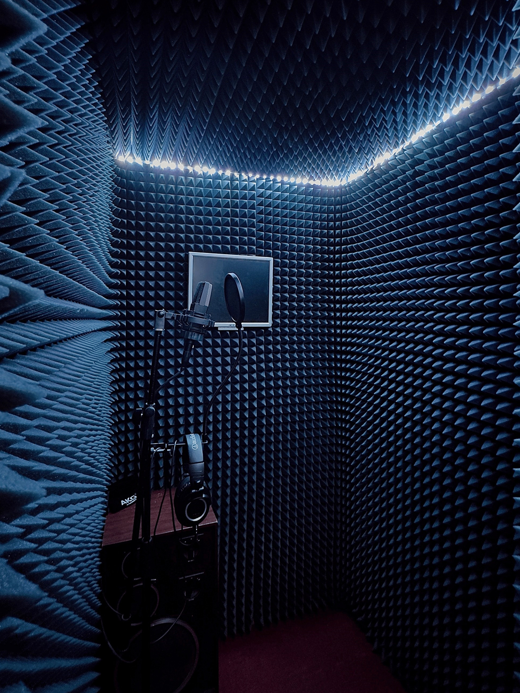
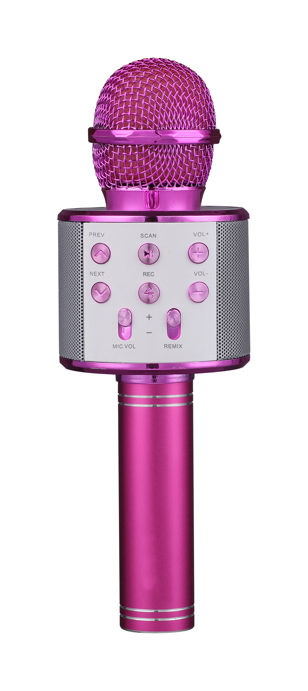
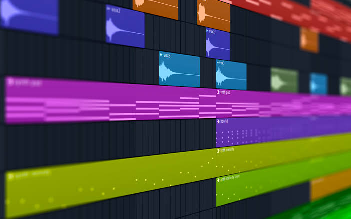
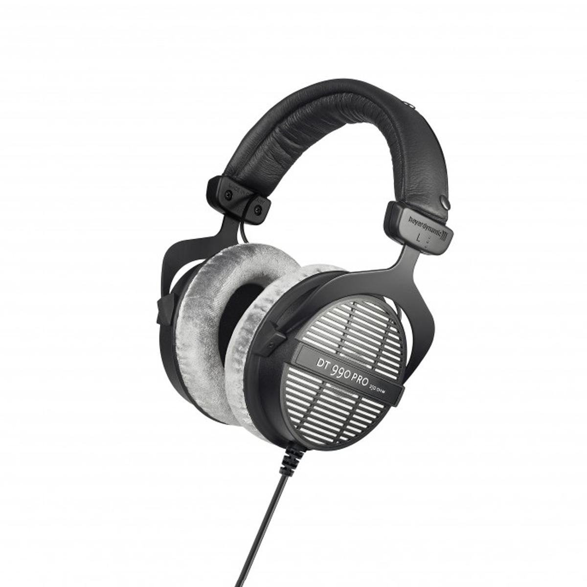

Главная
Основы
Таблицы
Анкета и заказ
Паспорт
Задача
Википедия
Git
Основы саунд-дизайна
Саунд-дизайн создаёт звуковой образ фильма, игры или интерфейса. Коротко о главном.

Рабочее место саунд-дизайнера: мониторы, микшер, наушники.
Что такое звук
Инструменты
Этапы работы
Где применяется
Что такое звук
Любой звук описывается несколькими параметрами. Основные термины:
-
Частота
- Скорость, с которой колеблются звуковые волны, измеряется в герцах (Гц) или килогерцах (кГц).
-
Амплитуда
- Максимальное отклонение параметров звуковой волны от положения равновесия.
-
Тембр
- Характерная окраска звука, по которой отличают один инструмент или голос от другого.
-
Огибающая
- Функция, описывающая изменение параметра сигнала (чаще громкости) во времени.
Диапазоны частот
- голос, большинство инструментов
- шипящие, тарелки, «воздух»
наверх ↑
| Тип |
Примеры |
Для чего |
| DAW |
Reaper, Ableton Live, FL Studio |
Запись и монтаж |
| Синтезаторы |
Serum, Vital |
Создание звуков с нуля |
| Плагины |
EQ, компрессор, реверб |
Обработка |
| Микрофон |
Динамический, конденсаторный |
Запись шумов (foley) |
Нажмите на миниатюру, чтобы открыть фото в новой вкладке:



Микрофон, окно DAW, наушники.
наверх ↑
Этапы работы
По порядку
- Изучить задачу и референсы.
- Записать или подобрать звуки.
- Обработать: эквализация, компрессия, эффекты.
- Смонтировать под картинку.
- Свести уровни.
Перед сдачей проверить
- нет щелчков и клиппинга
- голос разборчив
- громкость ровная
- звучит на колонках и наушниках

Foley: звуки шагов и предметов записывают вручную.
Совет: делайте перерывы, на уставшие уши сведение получается хуже.
наверх ↑
Где применяется
- Кино и сериалы
- Видеоигры
- Реклама и подкасты
- Интерфейсы приложений
наверх ↑